原文连接:https://www.cnblogs.com/AirSky/p/12077387.html
Servlet生命周期
五个部分，从加载到卸载，如同人类的出生到死亡
- 加载：Servlet容器自动处理
- 初始化：init方法 该方法会在Servlet被加载并实例化后执行
- 服务：service抽象方法：具体实现是doGet(),doPost()方法
- 销毁：destroy()，Servlet被系统回收时执行
- 卸载：Servlet容器自动处理
init():
- 默认第一次访问Servlet时会被执行（只执行这一次，可以修改为Tomcat启动时自动执行:
- 2.5：web.xml中
<servlet>字段添加<load-on-startup>1(代表第1个Servlet).. - 3.0：@WebServlet(value = "/Servlet3",loadOnStartup = 1)
service():->doGet() doPost:调用几次，则执行几次
destroy():关闭tomcat服务时
Servlet API
由两个大类四个软件包组成：：
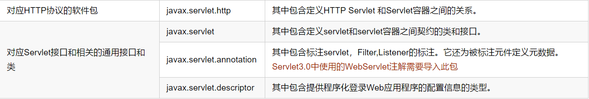
即Servlet API可以适用于任何通信协议。但绝大多数情况下Servlet只用来扩展基于HTTP协议的Web服务器。
我们学习的Servlet，是位于javax.servlet.http包中的类和接口，是基础HTTP协议。
Servlet继承关系
ServletConfig:接口
ServletContext getServletContext():获取Servlet上下文对象 application
String getInitParameter(String name):在当前Servlet范围内，获取名为name的参数值(初始化参数)
a.ServletContext中的常见方法(application):
getContextPath():相对路径
getRealPath():绝对路径
setAttribute()、getAttribute()
---->
String getInitParameter(String name);在当前Web容器范围内，获取名为name的参数值(初始化参数)
初始化全局参数
<context-param>
<param-name>globalParam</param-name>
<param-value>global value...</param-value>
</context-param>初始化Servlet参数
- Servlet2.5
<servlet>
<servlet-name>my</servlet-name>
<servlet-class>com.hacker.servlet.MyServlet</servlet-class>
<load-on-startup>2</load-on-startup>
<!--配置当前Servlet初始化参数 -->
<init-param>
<param-name>servletparamname</param-name>
<param-value>servletparamvalue...</param-value>
</init-param>
</servlet>- Servlet3.0
@WebServlet(value = "/Servlet3",loadOnStartup = 1,initParams = {@WebInitParam(name="servletparamname30",value = "servletparamvalue30")})注意：此注解只隶属于某一个具体的Servlet，因此无法为整个Web容器设置初始化参数(如果要通过3.0方式设置，仍需在web.xml中设置)
获取全局参数
ServletContext对象表示Servlet应用程序。每个Web应用程序都只有一个ServletContext对象。在将一个应用程序同时部署到多个容器的分布式环境中，每台Java虚拟机上的Web应用都会有一个ServletContext对象。
通过在ServletConfig中调用getServletContext方法，也可以获得ServletContext对象。
@Override
public void init() throws ServletException {
System.out.println("init...");
//获取整个Web容器的初始化参数
String str=super.getServletContext().getInitParameter("globalParam");
System.out.println("当前Web容器的初始化的参数为"+str);
}获取当前Servlet参数
当Servlet容器初始化Servlet时，Servlet容器会给Servlet的init( )方式传入一个ServletConfig对象
其中几个方法如下：
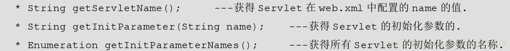
@Override
public void init() throws ServletException {
System.out.println("init...");
//获取当前Servlet的初始化参数
String str=super.getInitParameter("servletparamname");
System.out.println("当前Servlet的初始化参数为"+str);
}请求与响应
当我们在在请求Servlet容器具体的执行流程的细节是什么呢？一起来看一看
首先我们知道请求的过程最终传给了名为service的方法，那service方式到底是怎么执行的，我们先来简单的了解下
首先查看入口类继承的HTTPServlet类
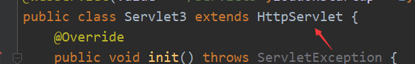
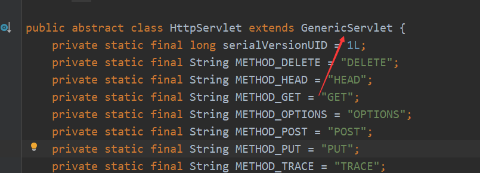
点进去发现继承至GenericServlet，继续跟进
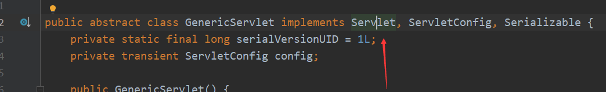
GenericServlet实现了一个Servlet接口
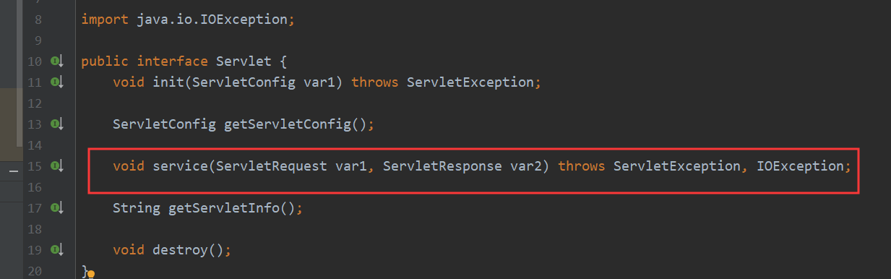
接口中定义了service方法，并且有两个参数ServletRequest和ServletResponse代表请求和响应，那么我们自定义的Servlet肯定不是实现的这个service方法，因为我们重写的service方法形参为HttpServletRequest和HttpServletResponse
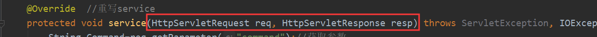
现在就来找找到底是重写的那个service方法，首先来看GenericServlet类

在GenericServlet类中发现实现了service的抽象方法，传入参数为ServletRequest，明显也不是，继续跟进HTTPServlet类
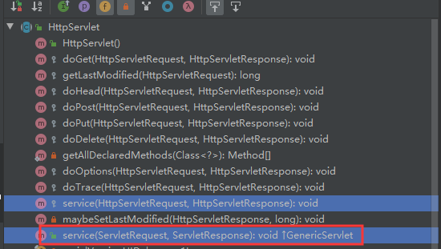
在HTTPServlet类中发现两个service方法，很明显第二个service方法参数也是ServletRequest，所以第二个service方法为实现方法，下面来看看具体实现
public void service(ServletRequest req, ServletResponse res) throws ServletException, IOException {
HttpServletRequest request;
HttpServletResponse response;
try {
request = (HttpServletRequest)req;
response = (HttpServletResponse)res;
} catch (ClassCastException var6) {
throw new ServletException(lStrings.getString("http.non_http"));
}
this.service(request, response);
}可以看到该实现方法将Servlet强转为了HttpServlet，
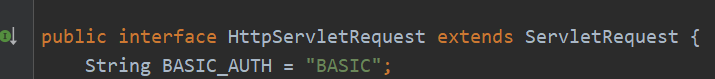
HttpServlet继承自Servlet，将父类变为了子类，把通用的响应，转换为了特需的HTTP响应，之所以能够这样强制的转换，是因为在调用Servlet的Service方法时，Servlet容器总会传入一个HttpServletRequest对象和HttpServletResponse对象，预备使用HTTP。因此，转换类型当然不会出错了。
PS：Java中父类想要转换为子类，父类的实例必须指向子类的应用，形如
public static void main(String[] args) {
//Car为父类，BigCar为子类
Car car=new BigCar();//这里car父类对象的引用为BigCar子类 父类是子类构造出来的实例
BigCar bc=(BigCar)car;//所以这里可以将父类对象car强转为子类对象BigCar
bc.setName("ssss");//这里就可以调用子类的方法
test(new BigCar());
}
public static void test(Car car) {
BigCar bigCar = (BigCar) car;
if (bigCar instanceof Car) {
System.out.println("1");
}
}最后调用了当前类中的重载方法service
protected void service(HttpServletRequest req, HttpServletResponse resp) throws ServletException, IOException {
String method = req.getMethod();
long lastModified;
if (method.equals("GET")) {
lastModified = this.getLastModified(req);
if (lastModified == -1L) {
this.doGet(req, resp);
} else {
long ifModifiedSince;
try {
ifModifiedSince = req.getDateHeader("If-Modified-Since");
} catch (IllegalArgumentException var9) {
ifModifiedSince = -1L;
}
if (ifModifiedSince < lastModified / 1000L * 1000L) {
this.maybeSetLastModified(resp, lastModified);
this.doGet(req, resp);
} else {
resp.setStatus(304);
}
}
} else if (method.equals("HEAD")) {
lastModified = this.getLastModified(req);
this.maybeSetLastModified(resp, lastModified);
this.doHead(req, resp);
} else if (method.equals("POST")) {
this.doPost(req, resp);
} else if (method.equals("PUT")) {
this.doPut(req, resp);
} else if (method.equals("DELETE")) {
this.doDelete(req, resp);
} else if (method.equals("OPTIONS")) {
this.doOptions(req, resp);
} else if (method.equals("TRACE")) {
this.doTrace(req, resp);
} else {
String errMsg = lStrings.getString("http.method_not_implemented");
Object[] errArgs = new Object[]{method};
errMsg = MessageFormat.format(errMsg, errArgs);
resp.sendError(501, errMsg);
}
}在该方法中，将请求类型进行了划分，判定请求类型调用不同的方法，所以我们重写的service方法实际上是接收了所有类型的请求，那么可以针对不同请求重写相应的方法，来简化我们的操作。
一般装饰者就是在主体组件扩展到具体的实现类时，会引入一个中间层，把装饰者的公布部分引入进来，在引入具体的实现时，只需要实现自己特定的部分就行了。公共的就放在上面，中间层中。而GenericServlet类就可以看作是那个中间层，它在空实现Servlet类的方法后，子类在继承的时候就可以只重写需要的方法，不必重写Servlet类的所有方法了。
MVC案例
学了这么多，现在就来动手实现一个MVC简单登录案例😀，再来复现一遍什么是MVC模式:
M：Model ，模型 ：一个功能。用JavaBean实现。V:View，视图： 用于展示、以及与用户交互。使用html js css jsp jquery等前端技术实现C:Controller，控制器 ：接受请求，将请求跳转到模型进行处理；模型处理完毕后，再将处理的结果
返回给 请求处 。 可以用jsp实现， 但是一般建议使用 Servlet实现控制器。
Jsp->Java(Servlet)->JSP
我们首先看到是View那么就先来实现一个View:login.jsp
<%@ page contentType="text/html;charset=UTF-8" language="java" %>
<html>
<head>
<title>Login</title>
</head>
<body>
<form method="post" action="/login">
用户名:<input type="text" name="un"><br/>
密码:<input type="password" name="pwd"><br/>
<input type="submit" value="登录">
</form>
</body>
</html>一个简单的登录界面就完成了，登录后Controller会首先接收到我们的请求，为了方便用户名和密码的存取，先新建一个JavaBean
package com.hacker.servlet.login;
public class Login {
String username;
String password;
public Login(String username, String password) {
this.username = username;
this.password = password;
}
public String getUsername() {
return username;
}
public void setUsername(String username) {
this.username = username;
}
public String getPassword() {
return password;
}
public void setPassword(String password) {
this.password = password;
}
}新建一个登录控制器
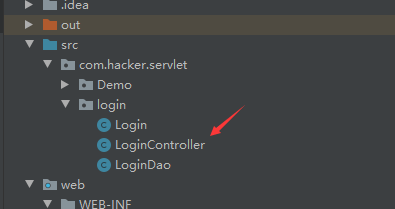
package com.hacker.servlet.login;
import com.alibaba.fastjson.JSON;
import com.alibaba.fastjson.JSONArray;
import com.alibaba.fastjson.JSONObject;
import javax.servlet.ServletException;
import javax.servlet.http.HttpServlet;
import javax.servlet.http.HttpServletRequest;
import javax.servlet.http.HttpServletResponse;
import java.io.IOException;
import java.io.PrintWriter;
/**
* 控制器层：接受view请求，并分发给Model处理
* */
public class LoginController extends HttpServlet {
@Override
protected void doPost(HttpServletRequest req, HttpServletResponse resp) throws ServletException, IOException {
String un=req.getParameter("un");//接收POST参数un
String pwd=req.getParameter("pwd");//接收POST参数pwd
Login login=new Login(un,pwd);//封装到名为Login的JavaBean中
resp.setCharacterEncoding("UTF-8");//设置返回编码
resp.setContentType("application/json; charset=utf-8");//设置返回格式和浏览器渲染编码
// resp.setContentType("text/html;; charset=utf-8");
PrintWriter out=resp.getWriter();//获取输出对象
LoginDao loginDao=new LoginDao();//获取一个登录模型对象
JSONObject jsonObject=new JSONObject();
try {
if (loginDao.login(login)){//直接传入login对象，用户名密码通过该对象的getter方法获取
jsonObject.put("登录成功","1");
// out.write("{\"flag\":\"true\"}");
}else {
// out.write("{\"flag\":\"flase\"}");
jsonObject.put("登录失败","0");
}
} catch (Exception e) {
e.printStackTrace();
}finally {
// out.write(jsonObject);
out.print(jsonObject);//返回Json格式的登陆结果
out.flush();
out.close();
}
}
}在web.xml中指定该Servlet的路径
<?xml version="1.0" encoding="UTF-8"?>
<web-app xmlns="http://xmlns.jcp.org/xml/ns/javaee"
xmlns:xsi="http://www.w3.org/2001/XMLSchema-instance"
xsi:schemaLocation="http://xmlns.jcp.org/xml/ns/javaee http://xmlns.jcp.org/xml/ns/javaee/web-app_4_0.xsd"
version="4.0">
<welcome-file-list>
<welcome-file>login.jsp</welcome-file>
</welcome-file-list>
<!-- 配置Servlet -->
<servlet>
<servlet-name>login</servlet-name>
<servlet-class>com.hacker.servlet.login.LoginController</servlet-class>
</servlet>
<!--配置访问方式 -->
<servlet-mapping>
<servlet-name>login</servlet-name>
<url-pattern>/login</url-pattern>
</servlet-mapping>
</web-app>编写LoginDao模型类，首先导入Mysql Jar包
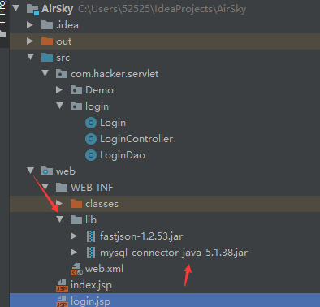
package com.hacker.servlet.login;
import java.sql.*;
/**
* 模型层 用于处理登录
*/
public class LoginDao {
static final String JDBC_DRIVER = "com.mysql.jdbc.Driver";
static final String DB_URL = "jdbc:mysql://localhost:3306/test";
static final String USER = "root";
static final String PASS = "root";
Connection conn; //连接对象
PreparedStatement pstmt;//预编译对象
ResultSet rs;//结果集对象
Boolean flag=false;//登录结果 默认为false
public Boolean login(Login login) { //登录操作
try {
Class.forName(JDBC_DRIVER);//反射调用导入驱动，加载具体驱动类
conn = DriverManager.getConnection(DB_URL, USER, PASS);//与数据库建立连接
String sql = "SELECT * FROM user WHERE username=? AND password=?";//预处理添加数据
pstmt = conn.prepareStatement(sql);//创建预处理执行对象(预编译SQL)
pstmt.setString(1, login.getUsername());//设置变量参数
pstmt.setString(2, login.getPassword());//设置变量参数
rs = pstmt.executeQuery();//返回查询到的结果集
if (rs.next()) {//判定结果集中是否能够读到数据
flag=true; //登录成功
}
} catch (ClassNotFoundException e) {
e.printStackTrace();
} catch (SQLException e) {
e.printStackTrace();
} catch (Exception e) {
e.printStackTrace();
} finally {
try {
//防止空指针异常
//关闭顺序与打开顺序相反
if (rs != null) rs.close();
if (pstmt != null) pstmt.close();
if (pstmt != null) conn.close();
} catch (SQLException e) {
e.printStackTrace();
}
}
return flag;//返回结果
}
}下面来试一试吧😁
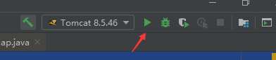
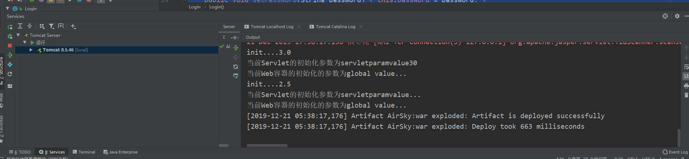
成功启动Tomcat
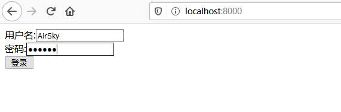
简洁的页面
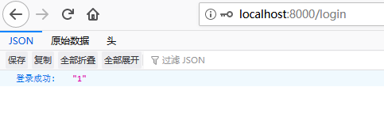
登陆成功，你能猜到密码吗？😜